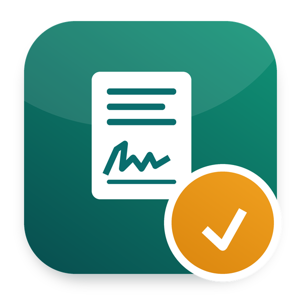

Prints and PDF files signed from an email link, in order, with a certificate
Part of Odoo 20 HRMS - Odoo Mates · Odoo 20 Community and Enterprise
Draw, type or upload a signature, on a phone or a computer
The employee first, then the manager: each one is asked in turn
Who signed, when, from where, and the fingerprint of the document
[signature: Employee] put a signature where it belongs in the text; the others sign below it. An uploaded PDF gets a signature page at the end.Works with Odoo 20 Community and Odoo 20 Enterprise. On Enterprise, it cannot be installed together with the Enterprise Sign app: both define the same records. Use one or the other.
om_print_template, portal.
Odoo Mates HR
The HR suite of Odoo Mates for Odoo 20: every module installs on its own, the links between them are bridges.
Support: odoomates@gmail.com